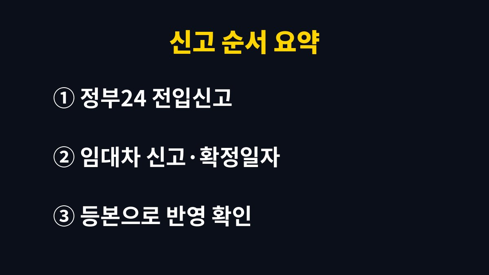

전입신고 기한은 이사한 날부터 14일 이내이고, 이 기간을 넘기면 주민등록법에 따라 과태료가 나올 수 있다.
세입자라면 전입신고와 같은 날 확정일자까지 받아 두어야 보증금을 지키는 순서가 완성된다.
기한 자체보다 신고를 미루는 며칠 사이가 더 위험하다.
주민등록법은 새 거주지로 옮긴 날부터 14일 이내에 전입신고를 하도록 정한다.
계약서를 쓴 날이나 잔금을 치른 날이 아니라 실제로 짐을 옮겨 살기 시작한 날이 기준이다.
정당한 사유 없이 기한을 넘기면 5만 원 이하의 과태료가 부과될 수 있다.
금액은 늦어진 기간에 따라 달라지고, 사정에 따라 감경되기도 한다.
신고 의무자는 세대주다.
세대주가 직접 못 하면 세대원이나 위임받은 사람이 대신 신고할 수 있다.
혼자 사는 집이라면 본인이 세대주라서 직접 하면 된다.
예를 들어 월말에 이사하고 다음 달 둘째 주에 신고하면 이미 14일을 넘긴 상태가 된다.
주민센터 창구에서 이사한 날을 묻는 이유가 여기에 있다.
기한 계산이 애매하면 이사 당일을 1일로 두고 달력에 표시해 두면 헷갈리지 않는다.
| 구분 | 대상 | 기한·효력 |
|---|---|---|
| 전입신고 | 이사한 모든 세대 | 이사한 날부터 14일 이내 |
| 확정일자 | 전세·월세 세입자 | 받은 날을 기준으로 우선변제 순위 |
| 주택임대차 신고 | 보증금 6천만 원 초과 또는 월세 30만 원 초과(군 지역 제외) | 계약일부터 30일 이내 |
대항력은 전입신고를 하고 그 집에 실제로 살고 있으면 다음 날 0시부터 생긴다.
확정일자는 이 대항력에 더해 경매나 공매 때 보증금을 순서대로 돌려받을 권리를 붙여 준다.
그래서 세입자에게는 전입신고만 하고 확정일자를 빼먹는 경우가 가장 아쉽다.
주택임대차 신고를 하면 확정일자를 받은 것으로 처리되니, 신고 대상이라면 따로 받을 필요가 없다.

온라인 신청이 막히면 새 주소지 주민센터에 신분증을 들고 가면 된다.
이미 다른 세대주가 있는 집으로 들어가는 경우에는 그 세대주의 확인 절차가 붙어 처리가 늦어질 수 있다.
신청 뒤 보완 요청이 오는 경우도 있어서 나는 등본으로 반영 여부를 직접 보는 단계까지 한다.
토요일에 이사하고 다음 주에 하려다 짐 정리에 밀려 일주일이 그냥 지나가는 일이 흔하다.
정부24 온라인 신청은 주말에도 접수되고 처리는 평일에 이어진다.
보증금이 걸린 세입자라면 이사 당일 신청해 두는 편이 마음 편하다.
대항력이 다음 날 0시부터 생기기 때문에 같은 날 집주인이 담보대출을 받으면 은행 근저당이 앞설 수 있다.
그래서 계약서 특약에 잔금일 다음 날까지 담보를 설정하지 않는다는 문구를 넣기도 한다.
이 부분은 계약 전에 공인중개사에게 묻는 게 빠르다.
전입신고 화면에서 주소변경 서비스를 함께 신청하면 은행·카드사처럼 고른 기관의 주소도 같이 바뀐다.
이걸 놓치면 고지서와 카드 명세서가 옛 주소로 계속 간다.
주소변경 서비스로 바뀌지 않는 쇼핑몰 배송지나 회사 인사 기록은 직접 고쳐야 한다.
14일은 넉넉해 보이지만 세입자에게는 하루 차이가 보증금 순위를 바꿀 수 있다.
내 계약이 주택임대차 신고 대상인지 헷갈리면 새 주소지 주민센터에 전화로 먼저 물어보면 된다.
참고 자료: 정부24 「전입신고」 안내(2026년 11월 확인) · 국가법령정보센터 「주민등록법」(2026년 11월 확인)
※ 2026년 기준 공공기관 안내를 바탕으로 정리한 글이며, 집 구조와 제품에 따라 결과가 다를 수 있어 제품 설명서를 함께 확인하길 바란다.